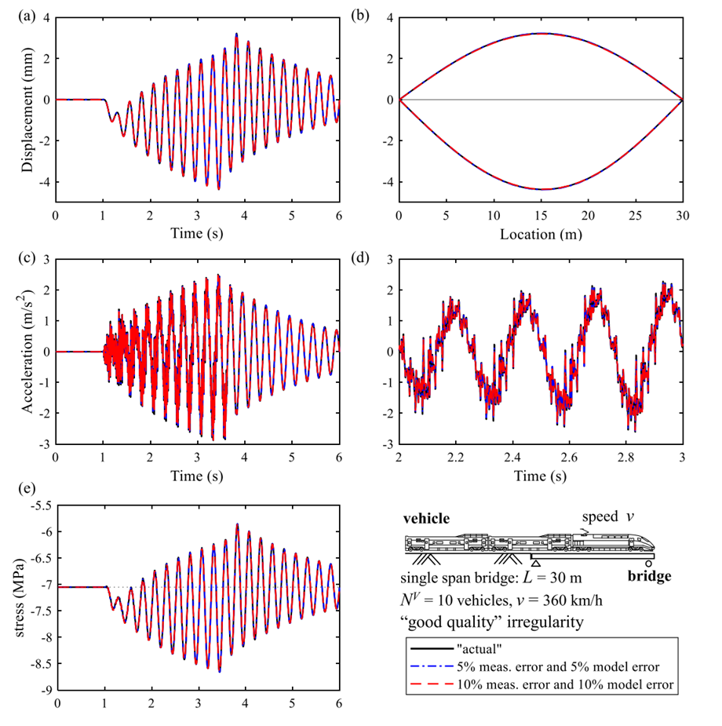

Utilizing On-board Sensing of Passing Train Vehicles for Virtual Sensing of Bridges
Our recent work is now available online in Engineering Structures.
This study proposes a bridge response reconstruction approach using exclusively measurements obtained from instrumented train vehicles with known properties. The approach relies on an Augmented Kalman Filter (AKF) technique to estimate contact forces without prior knowledge of rail profile irregularities. Furthermore, the proposed methodology addresses the challenge of accurate vehicle-bridge interaction (VBI) contact force estimation in the presence of rigid-body modes in the train model, by separating rigid-body from flexible modes, and establishing a state-space formulation that incorporates the vehicle dynamics of solely flexible modes.
The study examines, by means of numerical simulations, the impact of measurement and model errors, vehicle speed, and rail irregularities on both contact force estimation and bridge response reconstruction. It also investigates sensor configurations that minimize the number of sensors required on the train and shows that acceleration at all wheels and strain of at least one primary suspension per bogie are necessary for accurate force estimation. The results emphasize the significant role of VBI in achieving accurate bridge response reconstruction. The estimated contact forces in combination with a bridge model allow the reconstruction of the bridge response through virtual sensing, providing valuable information on the bridge's health status.

Figure: Comparison between the "actual" and reconstructed bridge response: (a) displacement response history, (b) envelope of the deflection of the bridge, (c) acceleration response history, (d) zoom in of (c), (e) normal stress history of the top surface at the midspan of the bridge (v = 360 km/h) ("good quality" rail irregularity).